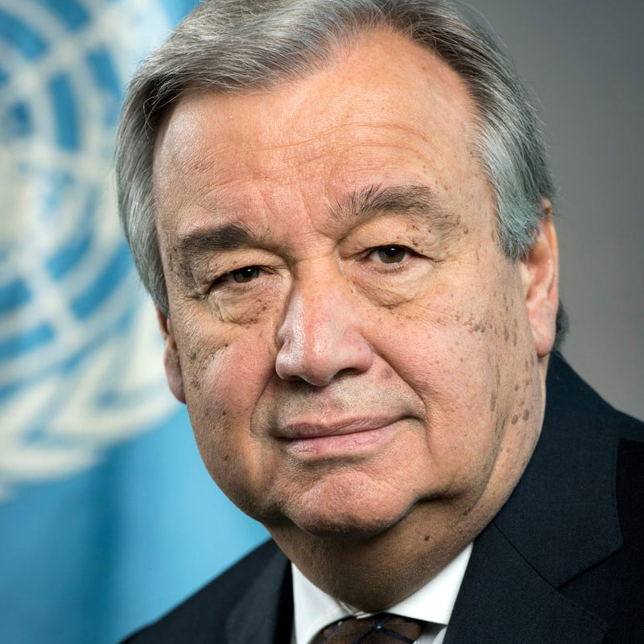
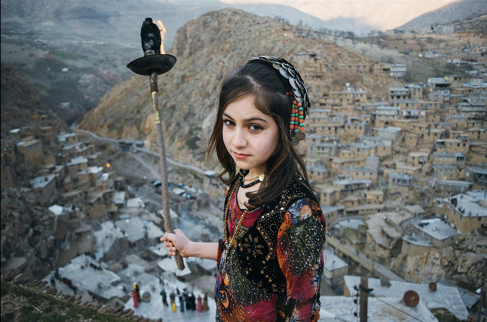

Nowruz celebration in Turkey
PHOTO: © Iranian Cultural Heritage, Handicrafts and Tourism Organization (ICHHTO)
International Nowruz Day 21 March

'In these times of great challenge, Nowruz promotes dialogue, good neighborliness and reconciliation'.
UN Secretary-General António Guterres
SOURCE: UNITED NATIONS
Nowruz (Persian: نوروز [noːˈɾuːz]) is the Iranian or Persian New Year celebrated by various ethnic groups worldwide. It is a festival based on the spring equinox— which marks the first day of the new year in the Iranian Solar Hijri calendar, on or around 21 March on the Gregorian calendar. (Wikipedia)
What is Nowruz and why do we celebrate it?
The word Nowruz (Novruz, Navruz, Nooruz, Nevruz, Nauryz), means new day; its spelling and pronunciation may vary by country.
Nowruz marks the first day of spring and is celebrated on the day of the astronomical vernal equinox, which usually occurs on 21 March. It is celebrated as the beginning of the new year by more than 300 million people all around the world and has been celebrated for over 3,000 years in the Balkans, the Black Sea Basin, the Caucasus, Central Asia, the Middle East and other regions.
Inscribed in 2009 on the Representative List of the Intangible Cultural Heritage of Humanity as a cultural tradition observed by numerous peoples, Nowruz is an ancestral festivity marking the first day of spring and the renewal of nature. It promotes values of peace and solidarity between generations and within families as well as reconciliation and neighbourliness, thus contributing to cultural diversity and friendship among peoples and different communities.
Nowruz plays a significant role in strengthening the ties among peoples based on mutual respect and the ideals of peace and good neighbourliness. Its traditions and rituals reflect the cultural and ancient customs of the civilizations of the East and West, which influenced those civilizations through the interchange of human values.
Celebrating Nowruz means the affirmation of life in harmony with nature, awareness of the inseparable link between constructive labour and natural cycles of renewal and a solicitous and respectful attitude towards natural sources of life.

A village girl, Palangan, Kurdistan, Iran. At the beginning of spring, Kurdish people according to their customs and culture, celebrate an annual celebration called Nowruz or kindling fire. Nowruz and Kurdish clothes are symbols of Kurdish culture.
Background
International Nowruz Day was proclaimed by the United Nations General Assembly, in its resolution A/RES/64/253 of 2010, at the initiative of several countries that share this holiday. Under the agenda item of “culture of peace”, the member states of Afghanistan, Azerbaijan, Albania, the Former Yugoslav Republic of Macedonia, Iran (Islamic Republic of), India, Kazakhstan, Kyrgyzstan, Tajikistan, Turkey and Turkmenistan prepared and introduced a draft resolution (A/64/L.30) entitled 'International Day of Nowruz' to the ongoing 64th session of the General Assembly of the United Nations for its consideration and adoption.
In the 71st plenary meeting on 23 February 2010, The General Assembly welcomed the inclusion of Nowruz in the Representative List of the Intangible Cultural Heritage of Humanity by the United Nations Educational, Scientific and Cultural Organization on 30 September 2009.
It also recognized 21 March as the International Day of Nowruz, and invited interested Member States, the United Nations, in particular its relevant specialized agencies, funds and programmes, and mainly the United Nations Educational, Scientific and Cultural Organization, and interested international and regional organizations, as well as non-governmental organizations, to participate in events organized by States where Nowruz is celebrated.
SOURCE: UNITED NATIONS